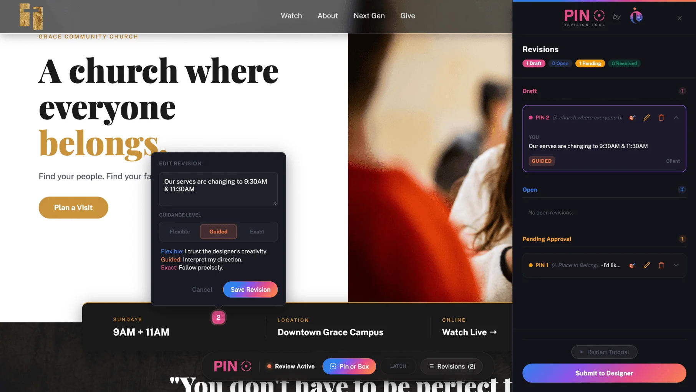

Here is exactly how it works.
From your first conversation with us to your site going live, we handle the details so you can stay focused on your ministry.
It starts with a few questions.
Before we get on a call, we want to know a little about you and your ministry. Our intake form walks you through the basics. Your church name, your vision, what you need, and where you are starting from. No technical knowledge required. Just tell us about your ministry in your own words. We handle everything else from there.
We get on a call and get aligned.
This is where we dig in together. We talk through your vision, your congregation, and what your site needs to do for your ministry. We help you figure out what you do not know you need, including domains, hosting, content, and photography. Do not have professional photos? We can help with that too. We work with photographers who specialize in church and ministry photography and can connect you with someone who will get you exactly what your site needs. By the end of this call we both know exactly what we are building and why.
We get to work.
Once we are aligned we start building. You do not have to do anything during this phase except stay available for quick questions. We handle the design, the development, the content placement, and all the technical setup. Domains, hosting, SSL certificates, mobile optimization. All of it. We keep you updated along the way so you are never wondering where things stand.
You review it your way.
When your site is ready for review we give you access to Pinpoint, our built-in revision tool. Instead of sending a list of changes in an email, you go directly to your site, drop a pin on anything you want changed, leave a note, and submit it. We see exactly where you are pointing and exactly what you need. No confusion, no back and forth, no missed details. Just precise clear revisions every time.
What is Pinpoint?Your site goes live.
Once revisions are approved we handle the launch. Domain connection, final testing, mobile checks, and everything in between. We make sure your site is fast, secure, and working perfectly before we hand you the keys. You do not have to touch a single line of code.
We stay with you.
Your site is live but we are not done. Every month you have access to Relay, your dedicated client portal. Need to update an event, swap a photo, change your service times, or ask a question? Log into Relay, send us a message, and we handle it. Three revision rounds every month, included with your management plan. We are your ongoing design team, always available, always ready.
What is Relay?Your ministry's direct line to us.
Log in, send a message, submit a revision, check your invoices. Everything in one place.
For the best experience viewing this demo visit us on a desktop.Revisions without the frustration.
Drop a pin on anything you want changed. Leave a note. Submit it. We handle the rest.
Click anywhere on the site to drop a pin and leave a note. We handle the rest.